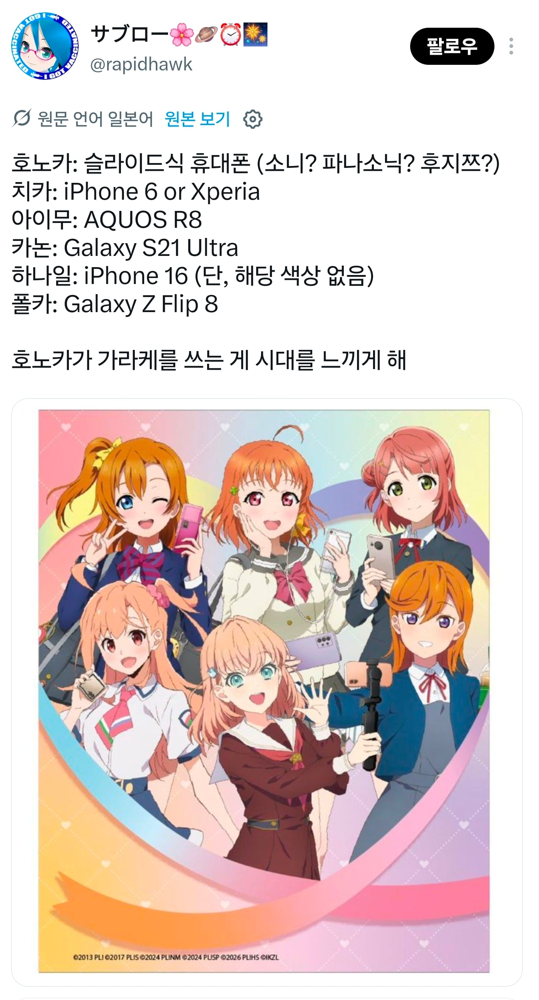
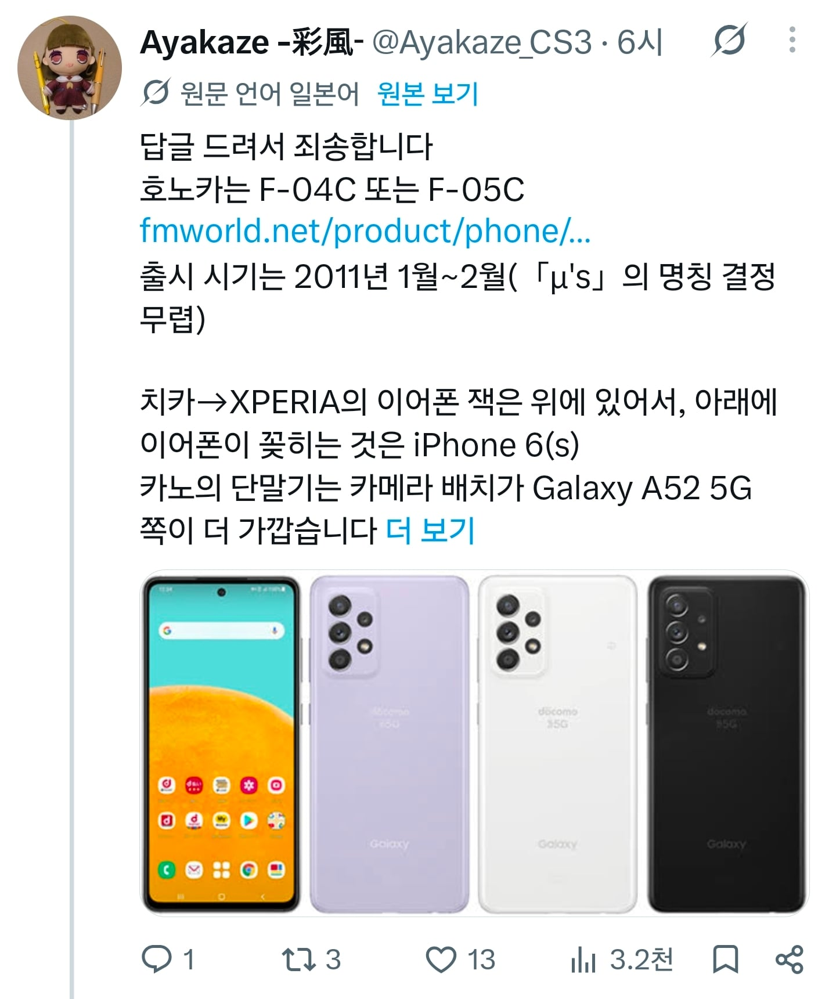

갤럭시 a52 쓰는애도 있고
가장 최신작은 주인공이 z플립 쓴다고


갤럭시 a52 쓰는애도 있고
가장 최신작은 주인공이 z플립 쓴다고
2011년에 희대의 명기 갤2 나오기전까진 폴더블 썻던거같긴한데 내기억으론
갤럭시 사랑은 대황카논
매번 갤럭시를 외치는 우리 구소쿠무시는 정작 아이폰이제
폴드8을 써라
예전 니뽄애니는 죄다 애플이었는데 이제 삼송이!!
효도폰 사드려야
아니 왜 럽라 슈스는 콘이 없는 것인가?
옛날에 꽃의 안드로이드학원인가 그거 생각나네
https://youtu.be/YIgoFjO9Mg4?si=qFNFWlZ-5HGz2sXH&t=105
러브라이브 초창기땐 폴더폰을 썼었네 ㄷㄷ